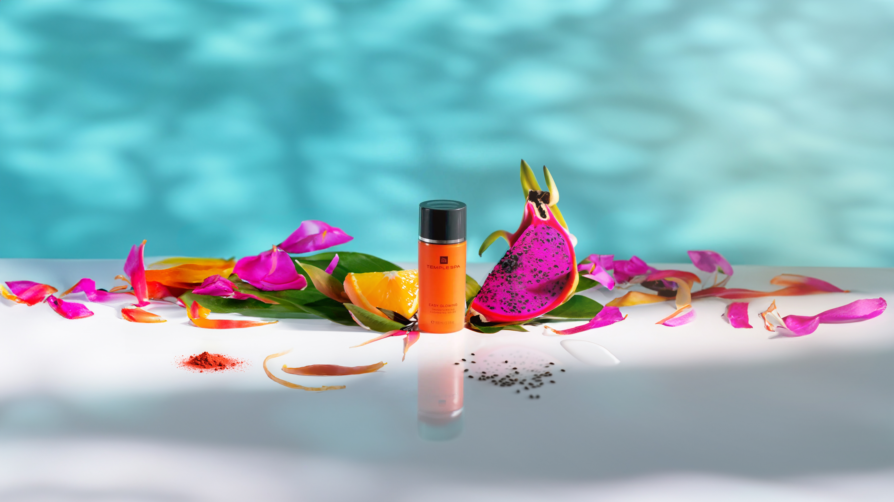
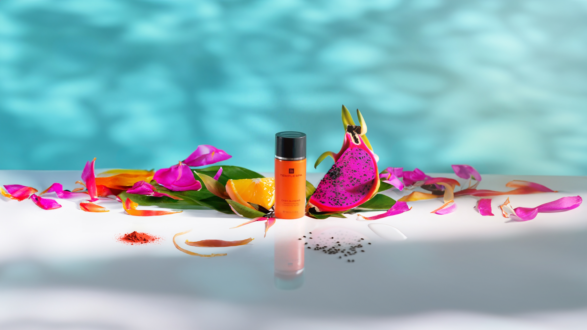
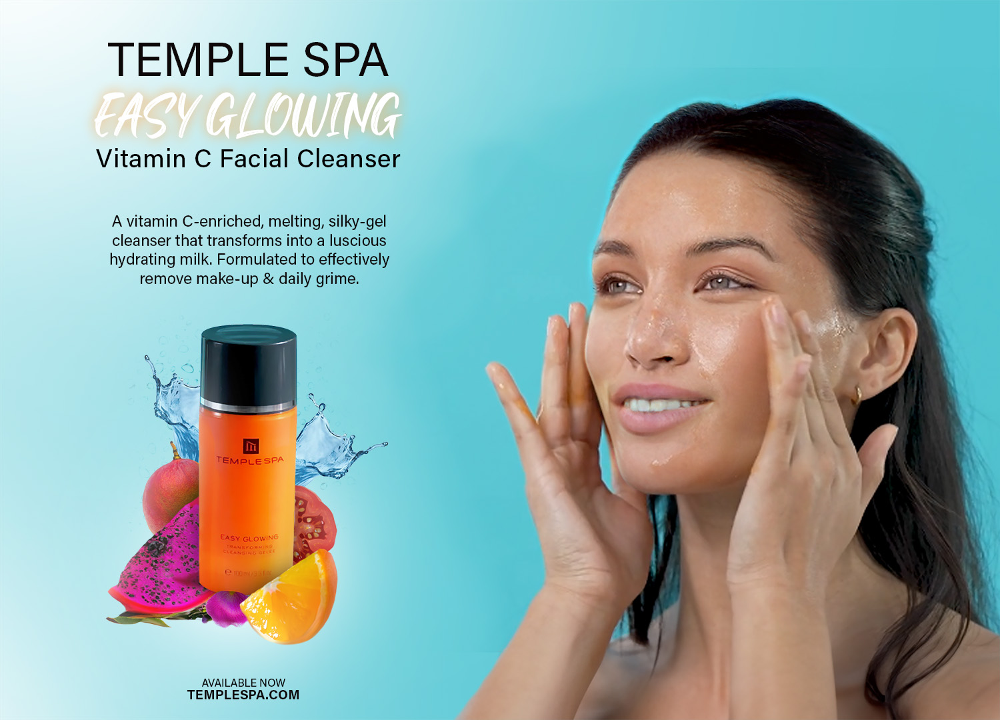
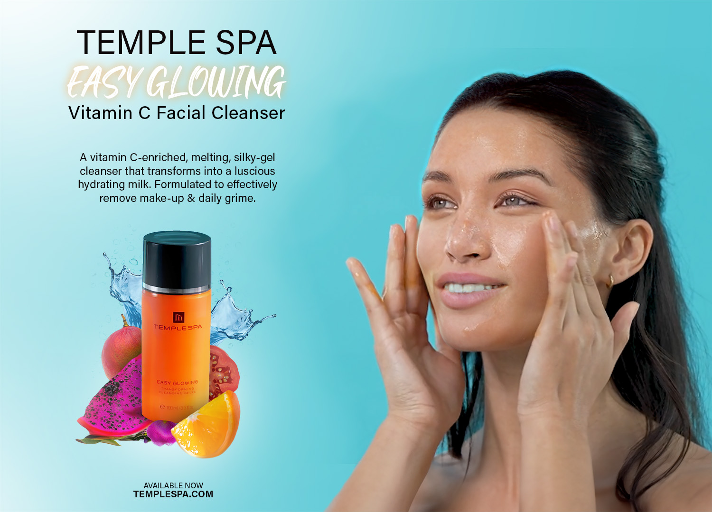
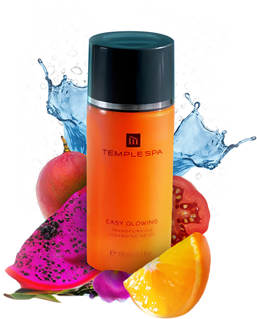

TASKS FOR TEMPLE SPA
Austin Spillman
austin.spillman@gmail.com
Moodboard
Bright and Energizing Color Palette:
Vibrant oranges, yellows, and greens to reflect the vitamin C's invigorating properties.
Soft pastel blues to convey cleanliness and freshness.
Nature-Inspired Imagery:
Images of citrus fruits like oranges, lemons, and grapefruits to evoke the natural source of vitamin C.
Sunlight streaming through leaves or dew-covered grass to symbolize the rejuvenating effects of the product.
Clean and Minimalistic Design Elements:
Sleek typography with sans-serif fonts to maintain a modern aesthetic.
Minimalistic icons representing skincare benefits such as hydration, brightness, and rejuvenation.
Lifestyle Photography:
Images of people with radiant, healthy skin enjoying outdoor activities to showcase the product's ability to
enhance one's natural glow.
Close-up shots of individuals applying the cleanser with a focus on the texture and consistency of the
product.
Sustainability and Ingredient Transparency:
Emphasis on eco-friendly packaging and the brand's commitment to using natural, cruelty-free ingredients.
Infographics highlighting the benefits of vitamin C and its role in promoting healthy skin.
Social Media Integration:
Links to the brand's social media profiles for users to engage with and share their experiences.
User-generated content featuring customers showcasing their results with the cleanser.
Call to Action Buttons:
Bold, eye-catching buttons prompting visitors to "Shop Now" or "Learn More,"
Seamless integration of e-commerce functionalities for a hassle-free shopping experience.
Hero Images
 

Either of these images can be used as the main image on the product page for the new Vitamin C Facial Cleanser. They highlight the product among some of the main ingredients in the serum with some additional flowers and petals in the background to add a refreshing atmosphere. The image is set on the edge of a pool, showing the beautiful blue water behind with the shadows of a tree overtop. This encourages feelings of luxury and serenity. They can also be used as some of the social media posts, shown below. Original image taken from the product page here.
{kind=link}
Social Media
Even based on the limited asset creation for this project, there are ample opportunities to create social media posts which promote the new product and highlight details of the product description. A few examples above include a three post length art piece, a static image which features the hero picture, and two animated posts. One highlighting the product, and the other showcasing the product ingredients. Both include a link to the shop in the post description.
Icons
Contains dragonfruit extract, which helps support the skin's microbiome by feeding healthy bacteria

Our cleanser deeply hydrates the skin, infusing it with essential moisture for a radiant and supple complexion
Seabuckthorn oil will help reduce blemishes by reducing excess sebum. Helps to soothe the skin with every use
Vitamin C is a powerful antioxidant which helps to cleanse and brighten skin for a glowing complexion
These illustrative icons can be used on product pages and social media to emphasise the products features and improve accessbility for people who struggle with reading. They are playful and match the design aesthetic of similar icons on the Temple Spa website.
Landing Page

This mockup shows a conceptual design for both desktop & mobile. Responsiveness is extremely important in todays web, with more and more people browsing on multiple devices. However, designs between devices need to remain as consistent as possible.
Desktop

The landing page brings together the mindset behind the moodboard and combines many of the assets created for each medium. The hero image is placed proud and center to draw the users gaze. These remains enough vertical screen space on modern 16:9 monitors to display additional vital information, such as the product description, product features and testimonials. Sections should be broken up so there's not too much text all in one block, or too many images to distract the user from the key points on the page.
Poster/Print Ad
 

The poster was made using assets from the hero as well as extra generated imagery and a still of the model from the live site, with a bit of extra manipulation. The poster can be used for print in adverts, event displays or exhibitions. The product splash asset can be used in in other mediums as well (pictured below). The colour scheme matches the blue and orange colours from the moodboard.
